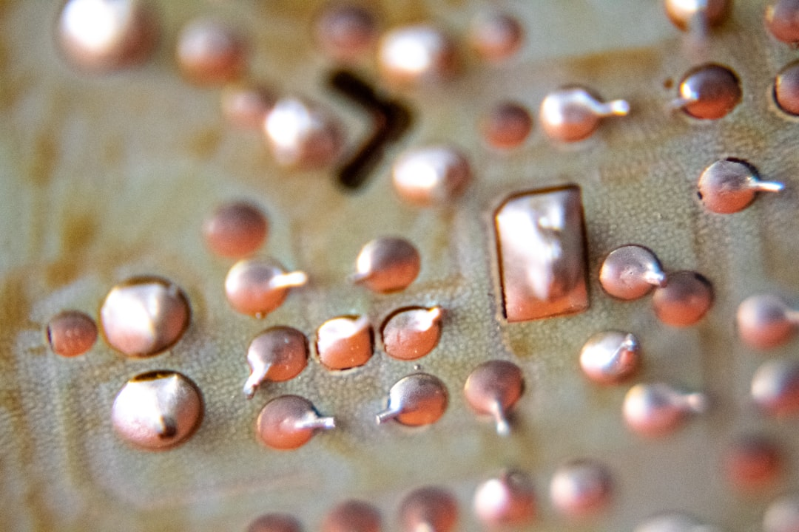

중국 헬륨 수출 통제, 반도체 세정·냉각 공급망 균열

중국은 2025년 들어 갈륨·게르마늄(2023년 8월 규제), 흑연(2023년 12월), 안티모니(2024년 9월)에 이어 헬륨 수출 통제 카드를 꺼내들었다. 중국은 현재 글로벌 헬륨 소비량의 약 20%를 자국 내 천연가스전에서 생산하며, 미국·카타르에 이은 3위 공급국이다.
반도체 팹에서 헬륨은 크게 세 가지 공정에 필수적이다. 이온주입기(Ion Implanter) 냉각, EUV 노광장비 렌즈부 퍼지(purge), 그리고 웨이퍼 이송 핸들러 쿨링이다. 삼성전자 평택 P3 팹 기준 월 수십 톤 이상이 소요되는 것으로 업계는 추정한다.
한국은 헬륨 자체 생산이 전무하며, 카타르·미국·호주산 헬륨을 수입하되 일부 물량은 중국 경유 트레이딩 루트를 통해 조달해 왔다. 2023년 기준 국내 헬륨 수입액은 약 900억 원 규모이며, 이 중 중국 경유 물량 비중은 정확히 공개되지 않았으나 15~25%로 추산된다.
중국의 헬륨 통제가 직접 수출금지 형태가 아닌 '수출 허가 사전승인제' 형태로 도입될 경우, 납기 지연이 재고 소진 전에 팹 가동률에 영향을 줄 수 있다. 에어프로덕츠(Air Products), 린데(Linde), 에어리퀴드(Air Liquide) 등 글로벌 산업용 가스 3사의 한국 내 재고 운용 정책이 단기 완충 변수가 된다.
헬륨 통제는 '소재 무기화'의 새로운 전선이다. 지금까지 중국의 수출 규제는 금속·광물 중심이었지만, 이번에 가스 영역으로 확대되면 반도체 팹이 직접적인 생산 중단 위험에 노출된다. 가스는 금속 소재와 달리 재고 비축 기간이 극히 짧고(액화 헬륨 기준 최대 수개월), 대체 조달처 전환에 수 주가 소요된다.
한국 입장에서는 소재 국산화 논의가 고체 소재에만 집중돼 있었다는 구조적 허점이 드러난다. 산업통상자원부의 '소재·부품·장비 공급망 안정화' 로드맵(2023~2027)에서 헬륨을 포함한 산업용 희귀가스는 별도 관리 항목으로 지정되지 않은 상태다. 이번 이슈가 정책 공백을 자극하는 계기가 될 것이다.
중장기적으로 미국 텍사스·카타르 라스라판 LNG 단지에서의 헬륨 직도입 계약이 전략 옵션으로 부상한다. 카타르에너지(QatarEnergy)는 연간 약 80억 세제곱피트 헬륨을 생산하며, 한국가스공사(KOGAS)와의 LNG 장기계약 패키지에 헬륨 조달 조항을 연동하는 구조가 현실적인 해법이다.
에어프로덕츠·린데·에어리퀴드 등 글로벌 산업가스 3사는 한국 팹 운영사들의 재고 확충 수요로 단기 마진 개선 효과를 본다. 린데코리아는 삼성전자·SK하이닉스에 가스를 장기공급하는 주요 파트너로, 계약 갱신 시 가격 협상력이 강화된다.
국내에서는 SK머티리얼즈(현 SK스페셜티)가 특수가스 공급 전문 계열사로, 헬륨 대체 또는 재활용(recycle) 설비 투자 확대의 수혜를 입을 수 있다. 헬륨 리사이클링 시스템은 팹 1기당 초기 설치비 약 30~50억 원 수준으로, 장기 조달 리스크를 감안하면 투자 회수 기간이 3년 이내로 단축될 전망이다.
삼성전자·SK하이닉스는 헬륨 공급 불안정이 현실화될 경우 EUV 공정 라인 가동 조정이 불가피해진다. HBM4 양산을 앞두고 있는 SK하이닉스는 2025년 하반기 중 P4 팹 풀가동 계획이 있어 리스크 노출 시점이 겹친다.
중소형 팹리스·OSAT(외주 반도체 패키징) 업체들은 가스 장기계약 협상력이 약해 가격 인상분을 그대로 흡수해야 한다. 국내 OSAT 상위 5개사(하나마이크론, SFA반도체, 네패스, 시그네틱스, 엘비세미콘)의 경우 가스비 비중이 제조원가의 5~8%를 차지하는 것으로 추산된다.
구매담당자라면 지금 당장 헬륨 공급사와의 계약서에 '불가항력 조항(force majeure)' 범위를 재검토해야 한다. 중국발 수출 허가 지연이 불가항력으로 인정되는지 여부에 따라 손해배상 청구 가능성이 달라진다.
투자자 관점에서는 헬륨 리사이클링 설비를 보유하거나 이를 공급하는 기업에 주목할 시점이다. 국내 팹의 헬륨 재활용률은 현재 평균 40~60% 수준으로, 이를 80% 이상으로 끌어올리는 설비 수요가 단기간에 발생할 수 있다.
산업 전략가라면 산자부 소재·부품·장비 특별법(소부장법) 적용 대상에 헬륨·네온·크립톤 등 반도체 공정 희귀가스를 명시적으로 포함시키는 입법 건의를 서둘러야 한다. 현재 소부장 100대 핵심 품목 목록에 가스류는 극소수만 포함되어 있다.
실제 조달 현장에서는 — 헬륨 공급 이슈는 이미 2~3개월 전부터 글로벌 가스 트레이딩 업계에서 조용히 회자되고 있었다. 중국 내 특정 성(省) 단위 헬륨 생산 설비가 '점검'을 이유로 가동을 줄인다는 정보가 들어오기 시작했을 때, 선제적으로 카타르산 헬륨 스팟 계약을 체결한 팹들은 지금 여유가 있다. 뉴스가 나온 뒤 움직이면 이미 늦다.
이 포스팅은 쿠팡 파트너스 활동의 일환으로 수수료를 제공받습니다.